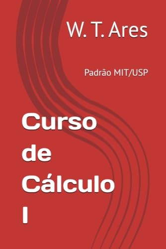
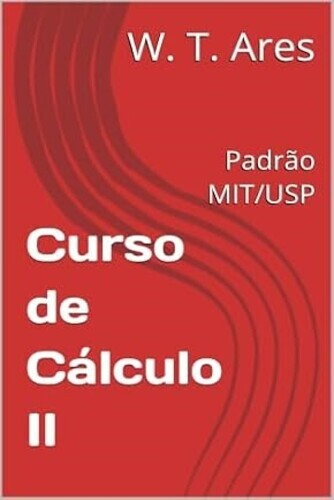
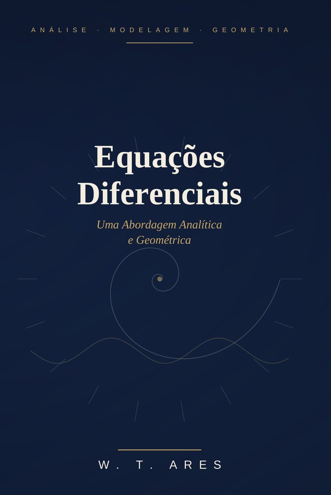

O Livro
Do primeiro limite às equações diferenciais — conheça cada volume da coleção.
Sobre o livro

Curso de Cálculo I
Um guia completo e didático para dominar os fundamentos do cálculo diferencial e integral. Com linguagem clara, exemplos práticos e exercícios selecionados, esta obra é ideal para estudantes, professores e apaixonados por matemática.
Cada capítulo foi construído para acompanhar o raciocínio do leitor passo a passo, conectando teoria e aplicação sem perder o rigor que o cálculo exige.
"Mais do que um manual, é um companheiro de estudo que transforma o cálculo em conhecimento acessível e aplicável."

Curso de Cálculo II
Dando continuidade ao percurso iniciado no primeiro volume, o Curso de Cálculo II aprofunda-se nas técnicas avançadas de integração, no estudo de sequências e séries infinitas e nas primeiras noções de equações diferenciais. Cada tema é apresentado com o mesmo cuidado didático do volume anterior, unindo rigor matemático e clareza na exposição.
O livro consolida a base necessária para o estudante avançar com segurança ao Cálculo III, reforçando, por meio de exemplos e exercícios comentados, a conexão entre os conceitos e suas aplicações.
"Se o primeiro volume ensina a enxergar o limite, o segundo ensina a dominar a soma infinita que vem depois dele."
Curso de Cálculo III
Fechando a coleção, o Curso de Cálculo III leva o estudante ao cálculo em várias variáveis: derivadas parciais, integrais múltiplas e os fundamentos do cálculo vetorial, sempre com o mesmo cuidado didático que marca os volumes anteriores.
Com exemplos práticos e exercícios comentados, o volume conecta os conceitos aprendidos em I e II a aplicações em geometria, física e engenharia, preparando o leitor para os desafios do cálculo avançado.
"O terceiro volume abre o cálculo para o espaço: de uma variável para muitas, sem perder a clareza que guiou o caminho até aqui."

Equações Diferenciais
O mundo não é estático — ele se move, evolui, se transforma. E a linguagem que descreve essa mudança são as Equações Diferenciais. Este livro convida o leitor a ir além da simples memorização de algoritmos de resolução, unindo o rigor analítico à intuição geométrica.
A obra percorre desde os fundamentos das Equações Diferenciais Ordinárias — passando pelo Teorema de Picard-Lindelöf, sistemas lineares e a análise qualitativa de estabilidade — até o universo das Equações Diferenciais Parciais, construído sobre as Séries de Fourier e as equações fundamentais da física-matemática.
"Um verdadeiro guia teórico e prático para quem deseja não apenas resolver equações, mas compreender a dinâmica do universo por trás delas."
A coleção completa
Quatro volumes, uma jornada completa pelo cálculo
Do primeiro limite às equações diferenciais mais avançadas — a coleção foi pensada para acompanhar o estudante do início ao fim do curso, dos fundamentos de Cálculo I às Equações Diferenciais.
Volume I
Curso de Cálculo I
Limites, derivadas e os fundamentos do cálculo diferencial, com linguagem clara e exemplos práticos.
Volume II
Curso de Cálculo II
Técnicas avançadas de integração, sequências, séries e as primeiras noções de equações diferenciais.
Volume III
Curso de Cálculo III
O volume que fecha a coleção, dedicado ao cálculo em várias variáveis: derivadas parciais, integrais múltiplas e os fundamentos do cálculo vetorial.
Volume IV
Equações Diferenciais
Uma abordagem analítica e geométrica: EDOs, sistemas lineares, estabilidade, séries de Fourier e as equações fundamentais da física-matemática.